Orange One · HR · Module 15
One place for every employee to ask HR anything. One choice, the category, decides who answers it and by when.
Today HR answers the same questions all day, by WhatsApp, by someone walking over, by mail. Nothing records who asked, when, who answered, or whether the answer ever came.
So the turnarounds the HR appraisal sheets promise, one working day for an attendance correction and two for a payroll query, have no clock anywhere and cannot be measured. The Help Desk gives every employee one front door. They pick what it is about; that single choice routes it, times it, and decides who gets told when it goes wrong. Nobody has to know which of six modules their question belongs to.
The category is the router. All thirty carry who owns it, how long they have, who a reopen escalates to, whether it is confidential, and whether the real work belongs to another module. Change a category and every ticket raised under it behaves differently from that moment on.
Five steps. Only two of them belong to HR.
First reopen. The category's Escalation Level 1 is told, and joins
the ticket so they can actually work on it.
Second reopen. Escalation Level 2 as well.
Note what does not escalate: a ticket simply running late. That turns red and counts as a miss in the report, but pages nobody. Sending a ticket back is the act that pulls somebody else in.
| Screen | What it is for |
|---|---|
| Dashboard | Your own open tickets, and anything sitting with you |
| Raise a Ticket | Ask HR something. Picking a category names the person and the turnaround before you submit |
| My Tickets | Everything you have ever asked, and where each one got to |
| Ticket Categories | Ask for a new category when none of the thirty fits |
| Screen | What it is for |
|---|---|
| To pick up | Tickets that have come to you that nobody has claimed |
| To answer | Tickets you hold. The clock runs from when each was raised, not from when you picked it up |
| All Tickets | Everything you are allowed to see |
| Control Center | Where every open ticket is sitting, and how late |
| Reports | The monthly SLA, ageing, trend and satisfaction figures |
| Ticket Categories | Edit the thirty: owner, turnaround, escalation |
| Settings (admin) | Coordinators, who may be handed a ticket, and the escalation fallback |
| Action | Who | What happens |
|---|---|---|
| I have this | The owner | Tells the employee somebody has picked it up. The turnaround does not change |
| Ask for something | The owner | Tag anyone. The ticket moves to them and stops counting against HR |
| Answer it | The owner | Write what you did. Goes to the employee to accept |
| Hand it on | The desk | Wrong person, right category. Turnaround unchanged |
| Wrong category | The desk | Re-files it. Owner, turnaround and escalation all move, and the dialog shows the new ones first |
| That sorted it | Employee only | Closes it, with a rating |
| It is still not right | Employee only | Sends it back and escalates |
HR says “resolved”; the employee says “satisfied”. If one person could say both, the satisfaction score would mean nothing.
Five are governed by policy rather than a number of days: As per POSH Policy, As per Exit Policy. Those tickets show no due date and are never counted as late. That is correct, not a gap.
Employee Grievance, Sexual Harassment / POSH, and Disciplinary Matters. Only the person who raised it, the HR Head, and anyone formally escalated to can read them. Not the rest of the HR team. They are also left out of every report figure, and the report says how many it left out.
Travel, recruitment, stationery, training and full-and-final are really Travel Desk, New Recruitment, General Purchase, L&D and Employee Exit. Help Desk is the front door: HR starts the real work there and records the reference back on the ticket.
A late ticket turns red and counts as a miss. Sending one back is what pulls somebody else in.
Every category's second level is a label (Management, Finance Head, Admin Vendor, ICC Committee) and none of them is an Orange One account. Until HR names real people, a second reopen is recorded and tells no one. The screens say so rather than pretending otherwise.
Six parts. Tick as you go. Your ticks are remembered on this device.
An ordinary employee, an HR person who owns a category (Khushi), and the HR Head (Riya). Do not test as an admin. Admins can see everything, so an admin walkthrough proves nothing about who can see what.
signed in as · an ordinary employee
A1. Open Help Desk from the home screen. The menu should offer only four things, with no queues and no reports. Those belong to HR.
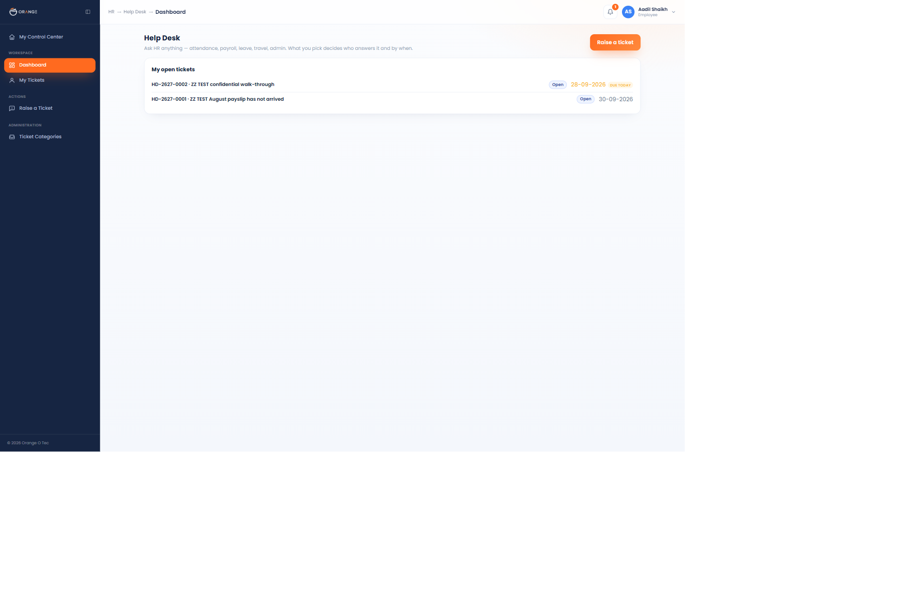
A2. Click Raise a Ticket.
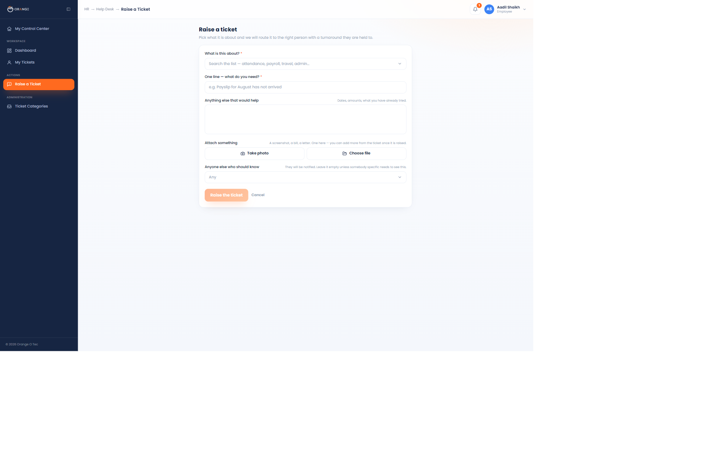
A3. Open the category list. All thirty, searchable, each showing its turnaround underneath.
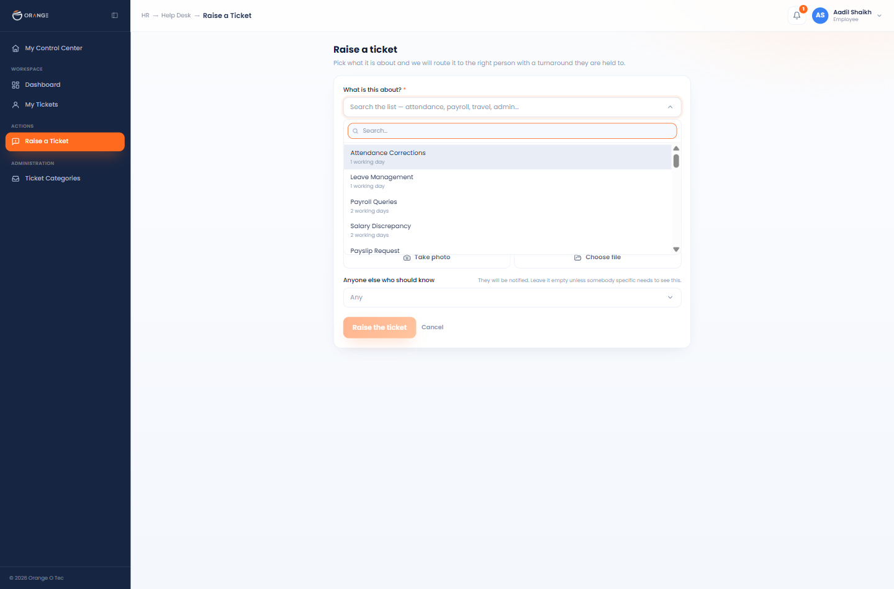
A4. Pick Payroll Queries. This is the most important check on the whole form.
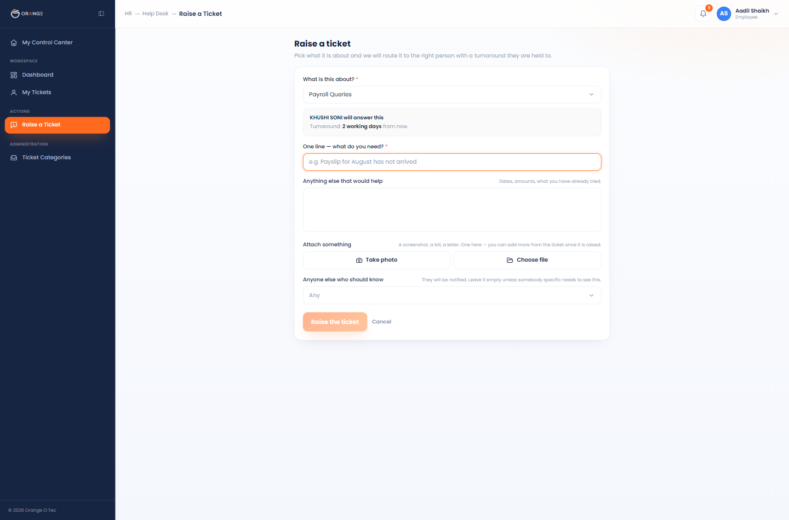
A5. Fill it in and submit.
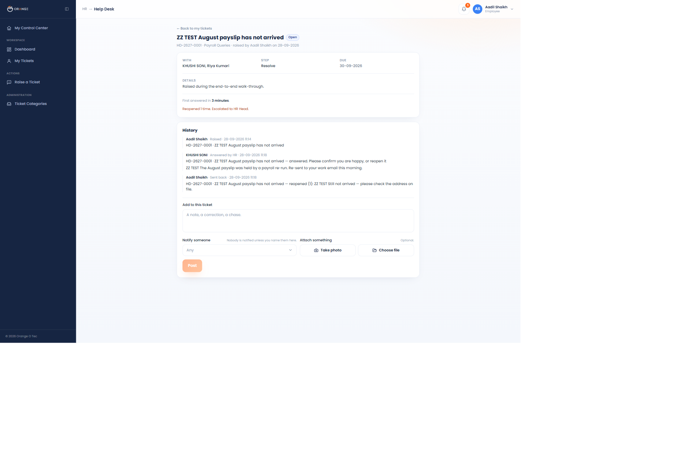
A6. Check My Tickets.
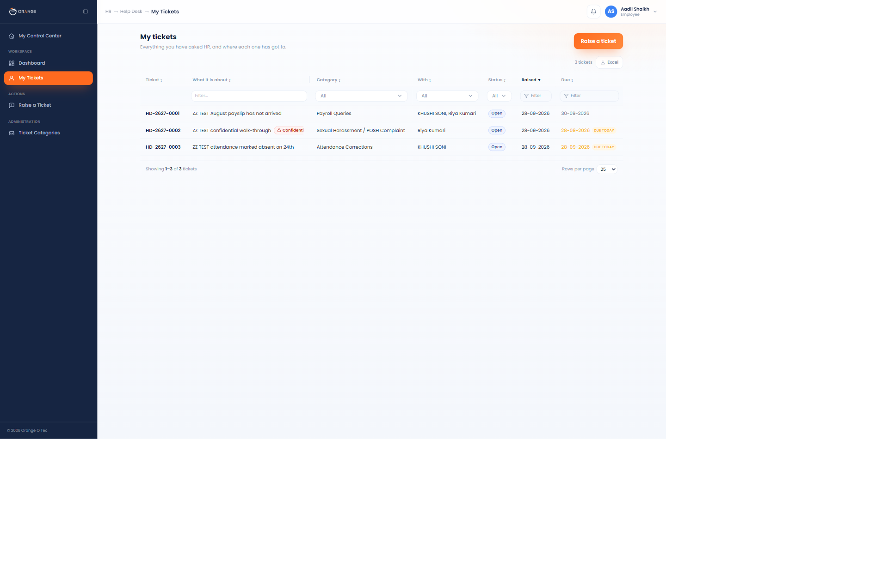
signed in as · Khushi, who owns that category
B1. Open Help Desk. The menu is much longer now.
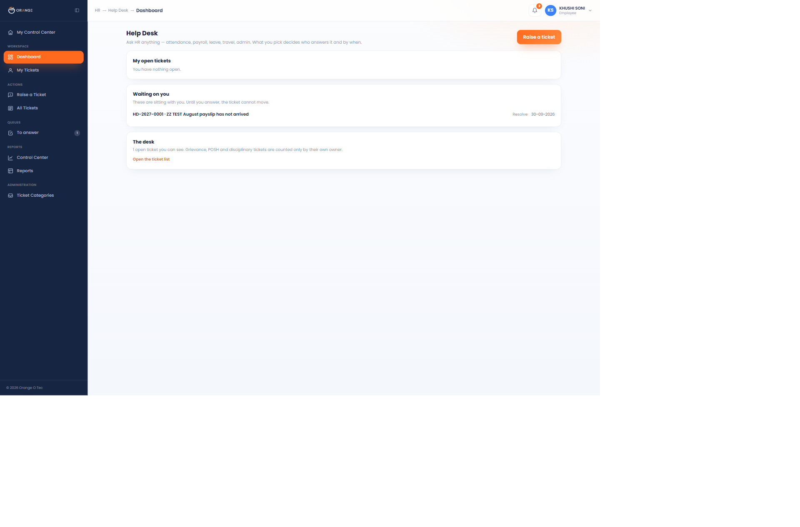
B2. Open To answer.
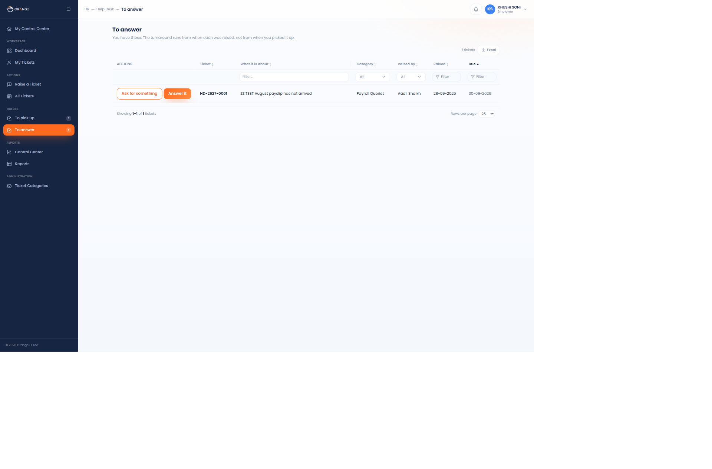
B3. Try Ask for something.
B4. Try Answer it.
B5. Check All Tickets and the Control Center.
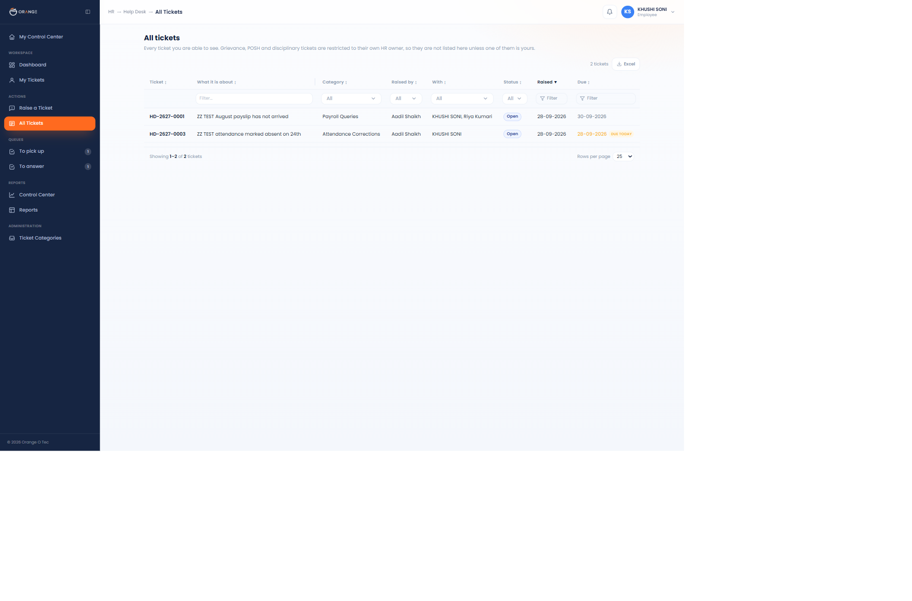
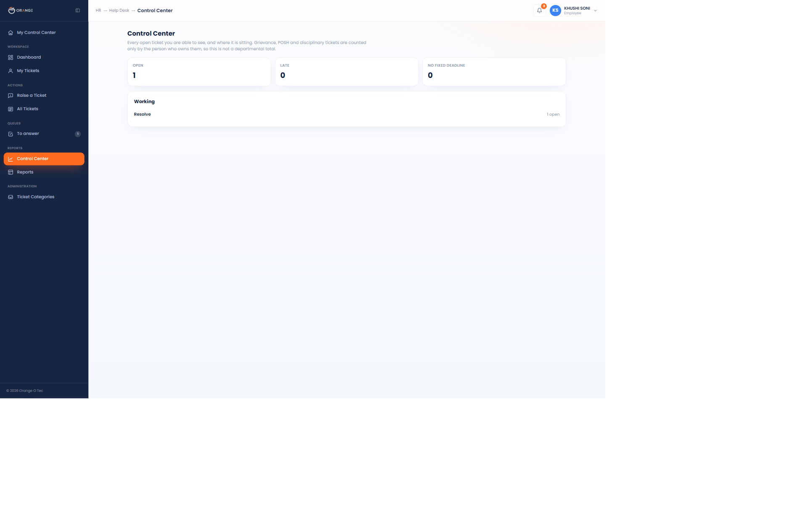
signed in as · the employee again
the most important part · all three people
That a POSH complaint is invisible to the HR team, including the people who can reassign and answer every other ticket. The complaint may be about one of them.
D1. As an ordinary employee, raise one under Sexual Harassment / POSH Complaint.
D2. Sign in as an HR person who does not own that category (Khushi).
D3. Sign in as the HR Head (Riya).
signed in as · anyone who runs the desk
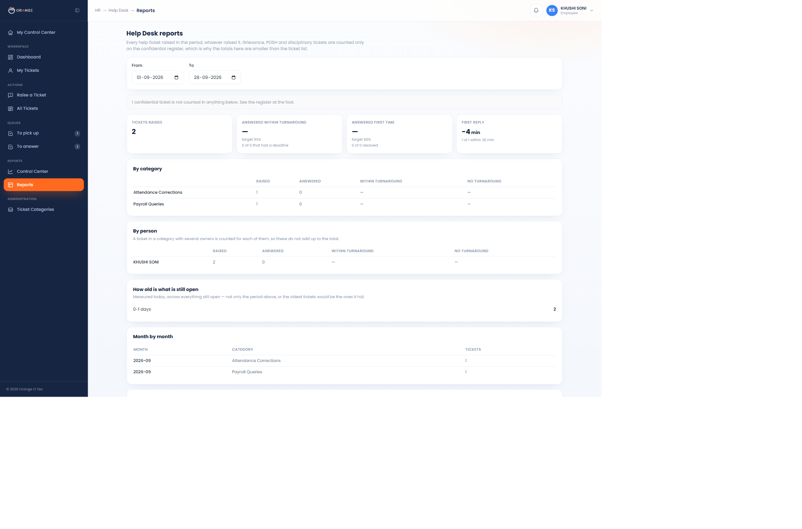
signed in as · HR
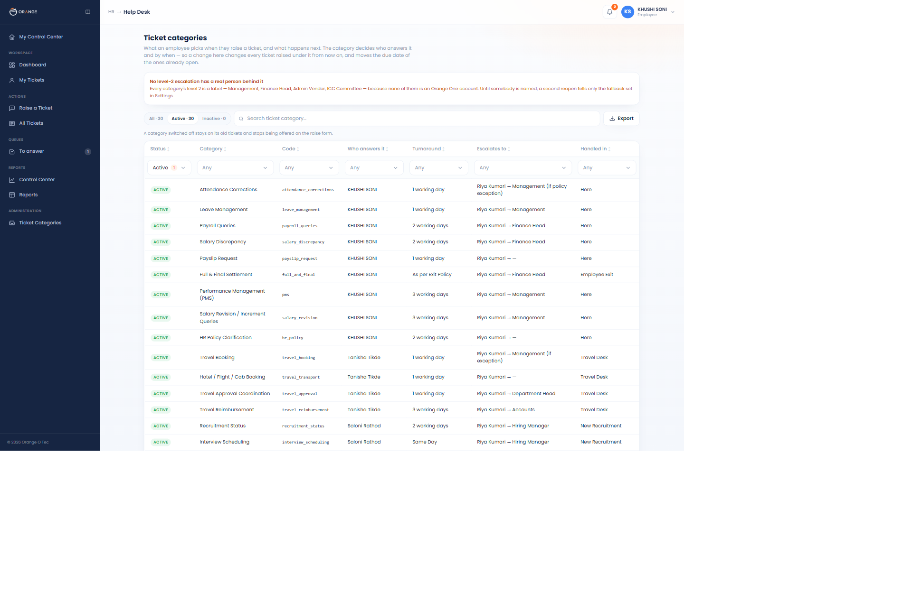
| Off | What that means today | To turn on |
|---|---|---|
| People are told in the hub (the bell), not by email | Settings, plus a technical deploy | |
| Auto-close | A ticket the employee never confirms stays open | Ask the developer to apply one file |
| KPI scoring | Help Desk does not yet count towards anyone's score | One switch, but read below first |
The scorecard counts by volume, while Khushi's appraisal sheet puts the Help Desk at 5% of her job. Two hundred tickets a month would dominate her score. It is off for that reason, and her sheet is written into the KRA / KPI lab where it is weighted the way HR wrote it.
Three answers and one short sitting in Settings. The first is visible in the product today.
| # | What is needed |
|---|---|
| 1 | Real people for every level-2 escalation. Management, Finance Head, Hiring Manager, Admin Vendor, Insurance Provider, Accounts, ICC Committee. None is an Orange One account |
| 2 | Who at Premware the IT Support category escalates to |
| 3 | One decision to confirm. The Help Desk sheet gives “Employee Engagement Activities” to Saloni, but Khushi's own appraisal claims that whole area at 25%. It is currently set to Khushi |
| 4 | Three lists on the Settings screen, all empty today. Nothing is broken by this and no code has to change, but until somebody is named: only an admin can reassign a ticket (the desk's own owner can still re-file or hand off their own), a request for a new category has no approver, and the fallback for an escalation that names nobody reaches nobody. Naming people in Settings is the whole fix |